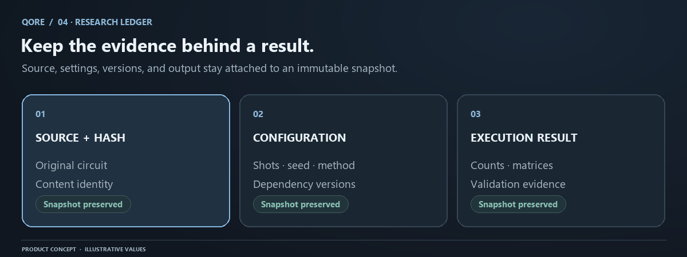

Research Ledger: immutable experiment evidence
Research Ledger preserves the context behind a result. Editable workspace files answer what you are working on now. A historical run answers what was submitted and what happened. A
Conceptual workflow. Numerical evidence and save status come from your actual QORE session.
Research Ledger preserves the context behind a result. Editable workspace files answer what you are working on now. A historical run answers what was submitted and what happened. An experiment groups source, parsed representation, configuration, versions, and referenced execution evidence into an immutable snapshot. Keeping these objects separate prevents routine editing from silently changing the record of an earlier experiment.

Files, projects, runs, and experiments
An Explorer entry is editable source stored under an account path. Legacy named projects are separately stored source records that can be associated with runs. A simulation or optimization request produces a run record with a kind, original source, source hash, configuration, and result or recorded error. An experiment is a named snapshot that can include source-matched simulation and optimization evidence.
These distinctions matter for deletion and recovery. Workspace Trash covers editable file/folder entries. Deleting a file does not mutate a historical run or rewrite an experiment's embedded source. A service-level backup policy may cover several tables, but the two-day file Trash mechanism is not a general undo system for every data object.
What a snapshot retains
The server parses source when creating an experiment. It stores QORE-IR version, canonical operations, metrics, warnings, source and source hash, and dependency versions. Referenced successful runs can attach the simulation and optimization results that belong to that same text.
Simulation evidence includes settings such as shots, seed, method, modeled noise, backend, counts, ideal probabilities, and execution duration. Optimization evidence includes original/candidate representations, resource differences, compiler settings, and numerical validation. A future reader should be able to distinguish a predicted distribution, a sampled result, and a compiler claim.
The hash is a content identifier, not a signature of execution correctness. Two circuits with different formatting can have different source hashes and the same semantics. A malicious or broken system could hash incorrect data consistently. Reproducibility therefore requires recorded methods, tests, access controls, and independent interpretation in addition to hashes.
Source-matched attachments
Before attaching a run, the API checks ownership, kind, successful completion, and source hash. A simulation ID cannot stand in for an optimization ID. A result from a different source version produces a conflict rather than being quietly attached to the current code.
This prevents a common experiment error: editing the circuit and saving an old attractive chart as if it belonged to the new version. The frontend also clears live results on source changes. The server check remains necessary because a client display rule alone cannot enforce data integrity.
Create a useful experiment
Start with a specific question, such as whether one QAOA angle improves expected cut value under fixed sampling settings. Save the working source. Run it, inspect the backend and mapping, and verify that the output is consistent with the question. Add a compiler result only if that comparison is part of the experiment.
Choose a name that identifies intent. GHZ readout-error comparison is more useful than test2. Keep a narrative note in your workspace or external research record describing expected behavior, variable changes, and interpretation. The preserved numerical evidence is most useful when the hypothesis is also clear.
Do not attach a failed or stale result simply to fill every field. An experiment with parsed source and a clearly described limited scope is better than one that suggests it contains a successful run when it does not.
Reopen and extend history
Open an experiment to inspect its preserved source and evidence. Historical source is treated as historical context rather than a writable copy of the stored snapshot. Clone or explicitly begin editing to create a new working version. This makes the transition from observation to new experiment deliberate.
The old snapshot stays unchanged. Applying a Forge candidate or editing a workspace file does not rewrite it. To compare a new result, create another named experiment. Keep the same settings when isolating a source change, and keep the same source when isolating a noise or sampling change.
Read errors as evidence
Run recording also preserves expected execution failures with configuration and an error envelope. A failed run is not a successful numerical output. It can still help explain why a later experiment changed source or settings. Use the status and error code instead of treating an empty chart as a zero-probability result.
Recorded errors are sanitized. Raw provider responses, environment variables, or credentials do not belong in a historical snapshot. A support report should refer to a sanitized error and minimal nonprivate source rather than exporting another person's complete record.
Reproducibility and its limits
Source, seed, configuration, and package versions make rerunning a study much more precise. They do not guarantee identical floating-point values or sampled counts across framework versions, CPU platforms, or implementation changes. Numerical algorithms and random-number behavior can change. Report comparison tolerances and statistical uncertainty rather than promising bit-for-bit reproducibility everywhere.
An immutable record is also not an automatic backup. Operators must maintain database backup, retention, restore testing, and incident response. Users should export important research according to the available workflow and keep independent copies when the work matters beyond one hosted instance.
Privacy and access
Hosted Ledger records are owner-scoped. The backend verifies session identity, then uses the user's access boundary for database requests. Composite relationships prevent linking another account's project or run. Run and experiment storage is append-oriented rather than offering arbitrary in-place history rewriting.
Signing out clears visible private evidence. Optional assistant requests can transmit the active circuit and attached results to the configured model provider, so decide whether that provider is appropriate for your data before invoking it. Read assistant privacy and backup operations before adopting QORE for sensitive research.